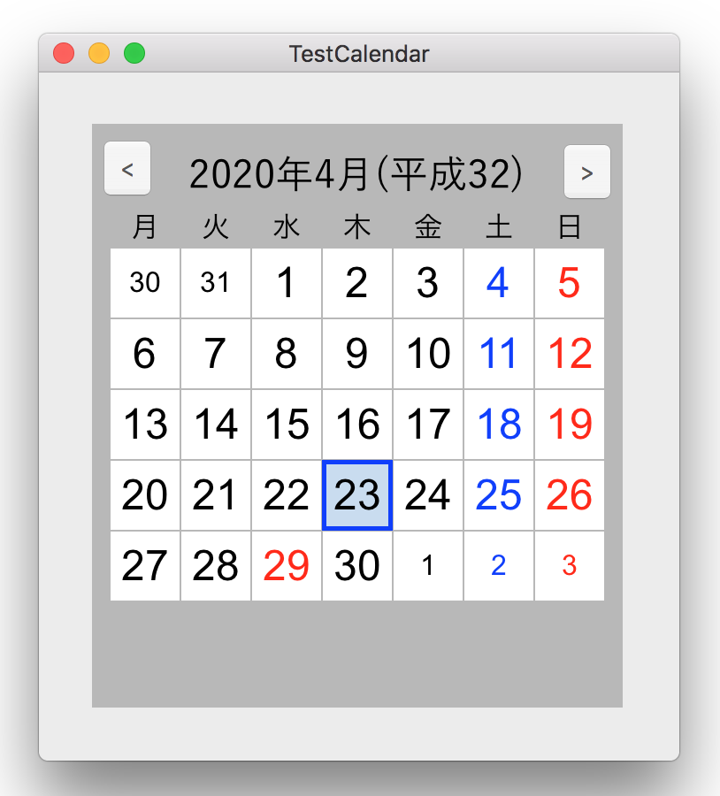
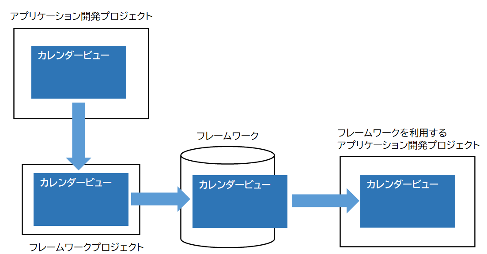
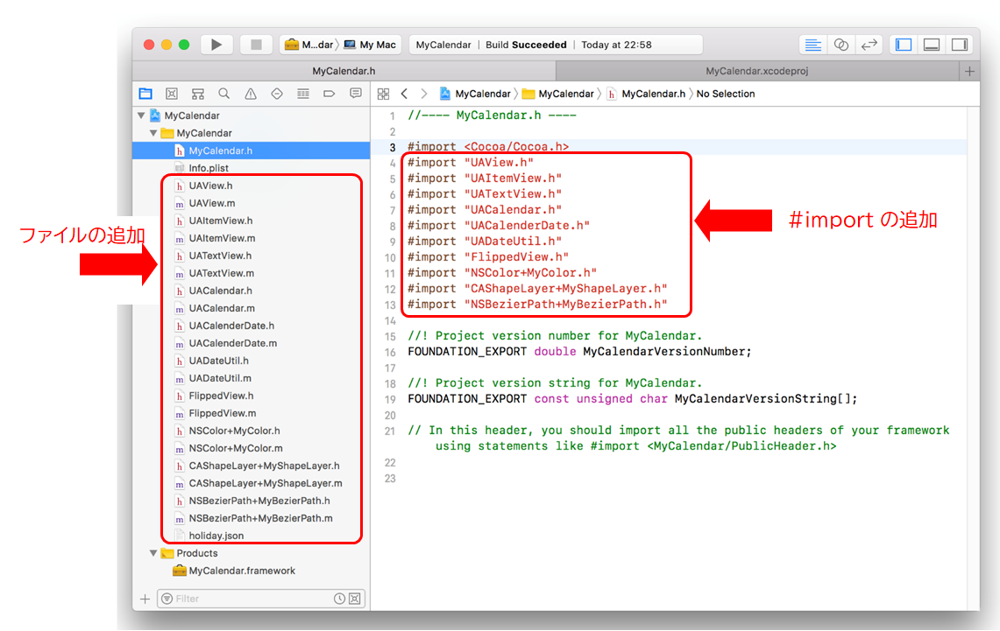
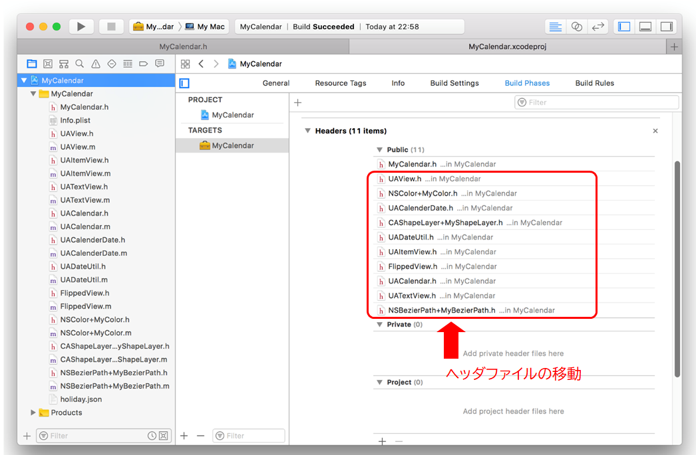
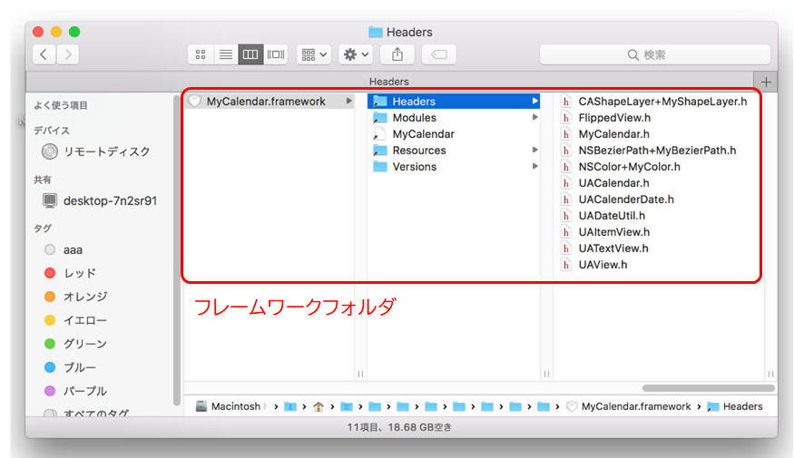
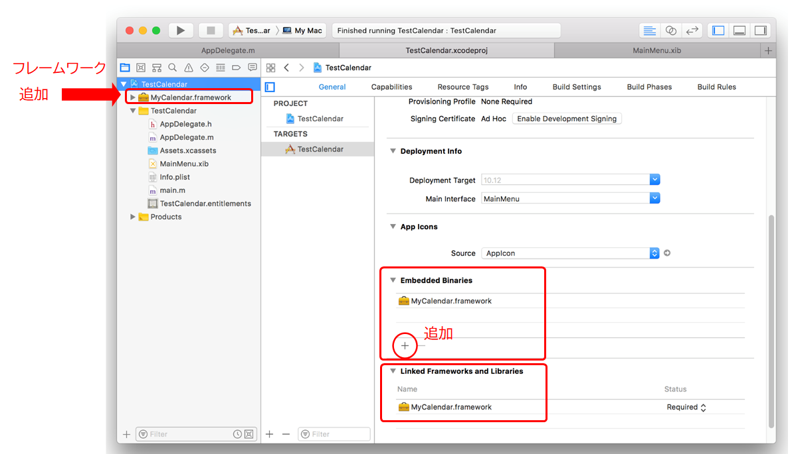
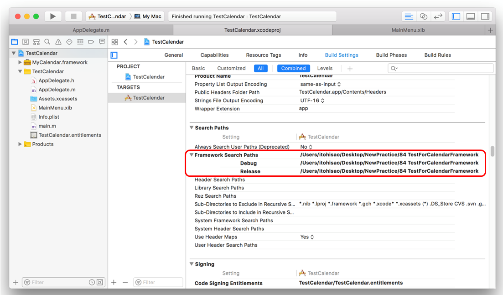

フレームワークを作ってみる（カレンダクラスの提供）
フレームワークは、機能を再利用する（使い回しする）ための手段のひとつ
フレームワークは単なるフォルダである。フォルダには、宣言ファイル（.h）、ビルド時にリンクされるバイナリオブジェクト、各種リソースやドキュメントなどを格納する。
アプリケーションはフレームワークをプロジェクト内に読み込むことで、フレームワークが提供する機能を利用することができる。本章では、シンプルカレンダーをひとつのクラスとして提供するフレームワークを作成してみる。

開発の流れ
アプリケーション開発プロジェクト
フレームワークとして提供する機能を定義し、アプリケーションプロジェクトにおいて開発・テストを行う。
フレームワーク作成プロジェクト
フレームワークプロジェクトを作成し、アプリケーションから必要な機能を切り出しプロジェクトに取り込む。
＜具体的な手順＞
アプリケーション開発プロジェクトから対象となるクラスファイル、リソースファイルをプロジェクト内にに追加する。フレームワークにヘッダファイル（プロジェクト名.h）が作成されているので、そこに追加したクラスのヘッダファイルのimport文を記述する。

プロジェクトの設定（Build Phases）から、ヘッダファイルを公開するための操作を行う。Privateフォルダに設定されているヘッダファイルを全て Publicフォルダに移す。ヘッダファイルの「公開」は、フレームワーク内のクラス間の相互参照のために必要ということ。フレームワークを利用するアプリケーションに「公開」という意味ではない。

以上ビルドすると必要なファイルが作成されフレームワークフォルダの中に格納される。

フレームワークを利用するアプリケーション開発プロジェクト
アプリケーション開発プロジェクトを作成し、フレームワークを読み込む。
必要な操作は、フレームワークフォルダをプロジェクト内におくこと。
方法は、フレームワークフォルダを直接プロジェクトナビゲータ上にドラッグ＆ドロップする。プロジェクトの設定 > Genaral > Embedded Binaries からファイルの追加により行うのいずれでも可。
General > Linked Frameworks and Libraries にフレームワークが指定されていること。これはフレームワークフォルダが追加された自動的に設定される。
なお、フォルダのドラッグ＆ドロップを行うたびに設定が追加されていってしまうので、重複分はそのたびに削除すること。

フレームワークを利用するために Framework Searchpathsを追加する。ただし、フレームワークをプロジェクト内にコピーしていれば、デフォルトで設定されているパスで良い。フレームワークを別のフォルダーに置いた場合に設定する。

アプリケーションはフレームワークが提供するクラスを利用してプログラムを作成する。カレンダービューオブジェクトを作成し、アプリケーションのウィンドウに表示する。クラスの実行ライブラリはビルド時にアプリケーションとリンクする。
Tips
フレームワークのプログラムがフレームワークのリソースを読み込むとき、Bundleの取得方法は次のようにすること。